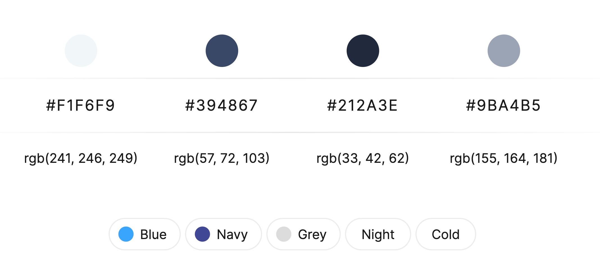

Final Project Proposal
TOPIC
This website will be a 3-page platform that uses the New York Times Books API to provide a rich and up-to-date literary experience.
Users can explore the latest bestsellers from NYT, access comprehensive book reviews, and dive into insightful author spotlights, all in one place. Book enthusiasts looking to discover, discuss, and appreciate new or classic literature will find this website helpful to them.
AUDIENCE
This website will appeal to avid readers, book club members, and literature enthusiasts seeking a reputable resource for book recommendations, reviews, and author information. It also serves as a valuable tool for individuals eager to stay up-to-date with the latest literary trends and discover their next great read.
DESIGN & STYLE
My website will be clean and modern with a more neutral color palette so that the focus remains on the books. The images of the book covers will be larger in size, compared to the rest of the content on the page. Main logos will use a serif font, but smaller text will be in a sans-serif font to increase readability.
COLOR PALETTE
The color palette will include black, white, neutrals, and some accent colors such as blue or orange. These colors will keep the page looking clean, simple, and easily navigable. Blue colors also reduce eye strain.
INSPIRATION
SCOPE
The website will include three pages.
1. Bestsellers and Recommendations: This page will display the current bestsellers lists from The New York Times. Users can explore and discover popular books across various genres. Each book entry includes its cover image, a brief description, author information, and links to reviews.
2. Book and Author Search: On this page, users can look up books or authors they're interested in. The API will find the book/author, as well as display reviews, along with relevant articles.
3. Personal Favorites and Recommendations: This page will show the user's favorites and allow users to add ratings and commentary/notes about what they enjoyed/didn't enjoy about the book; it will be similar to a personal reading journal.
EXTRAS
- New York Times Books API
- Event-driven DOM Manipulation (e.g. allow users to save favorite books, add reviews, conduct searches)
WIREFRAME